Data Preparation & Exploratory Data Analysis
Dataset status: 2,000 movies pulled from TMDB (filtered by year, genre, language, region, rating, and vote count), enriched with per-movie budget/revenue/runtime detail and World Bank economic data, then cleaned end to end. All figures and previews below are generated directly from that dataset.
Data Sources
The primary dataset is gathered directly from The Movie Database (TMDB), a community-built
movie and TV database with a free public API, via its /discover/movie and
/movie/{id} endpoints. Discovery queries are filterable by release year range,
genre, original language, release region, minimum vote count, and vote average (rating)
range, and can be sorted by popularity, rating, revenue, or release date. Per-movie detail
calls add fields the discovery endpoint does not return, including budget, revenue, runtime,
and production countries.
- Website:
https://www.themoviedb.org/ - API docs:
https://developer.themoviedb.org/reference/discover-movie - Core endpoint:
GET https://api.themoviedb.org/3/discover/movie - Example GET:
https://api.themoviedb.org/3/discover/movie?api_key=API_KEY&sort_by=popularity.desc&primary_release_date.gte=2000-01-01&primary_release_date.lte=2023-12-31&with_original_language=en&vote_count.gte=50&page=1
A second, government-sourced dataset comes from the World Bank Open Data API, used to add economic context (GDP per capita and population) for each film's primary production country and release year, with no key required.
- Website:
https://data.worldbank.org/ - Core endpoint:
GET https://api.worldbank.org/v2/country/all/indicator/{INDICATOR} - Example GET:
https://api.worldbank.org/v2/country/all/indicator/NY.GDP.PCAP.CD?format=json&per_page=20000&date=1990:2024
Raw vs. Cleaned Data
Below are small previews of the data before and after cleaning. The full files are linked above rather than pasted in directly.
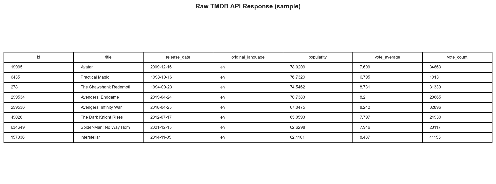
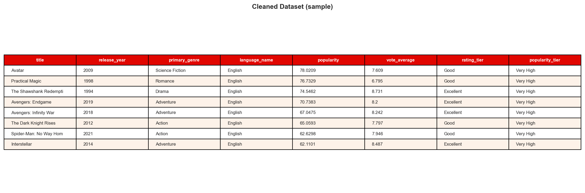
Cleaning Steps
The following cleaning steps are applied in scripts/clean_data.py:
- Duplicate movie records (by TMDB id) are dropped.
- Rows missing an essential field (release date, title, popularity, vote average, or vote count) are dropped.
- TMDB reports budget/revenue of 0 as "unknown," not "free" — these are converted to missing values and flagged (
has_budget_data,has_revenue_data) rather than treated as real zeros. - Impossible values are removed: negative vote counts and runtimes under five minutes (data errors, not real films).
- Release year, month, and decade are derived from the release date.
- Genre lists are parsed into a primary genre, a genre count, and a pipe-separated full list.
- Language codes are mapped to readable language names.
- Profit and return on investment are computed only where both budget and revenue are known.
- Popularity and rating are discretized into tiers (Low/Medium/High/Very High and Poor/Mixed/Good/Excellent) for later categorical analysis.
- Core numeric columns are min-max normalized (0-1) for use in later modeling modules.
- World Bank GDP-per-capita and population are joined in by production country and release year.
Exploratory Visualizations
Each figure below is generated by scripts/eda_visualize.py from the cleaned dataset.
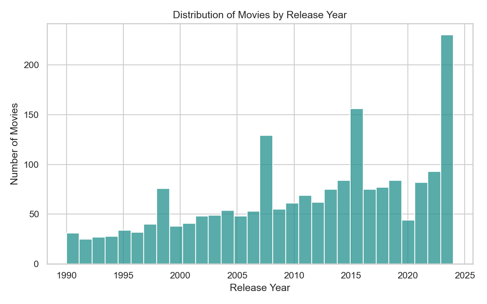
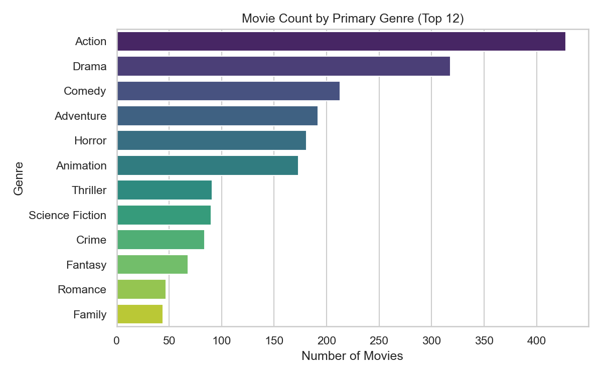
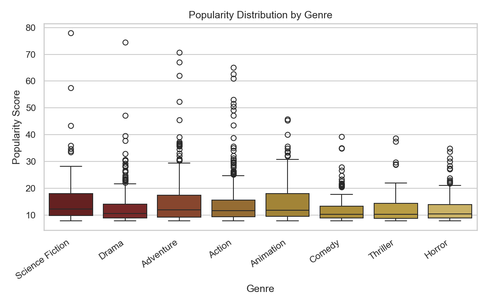
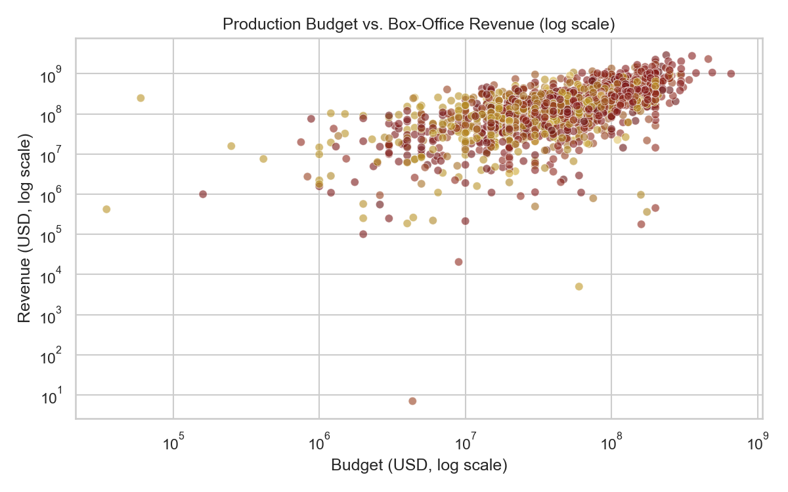
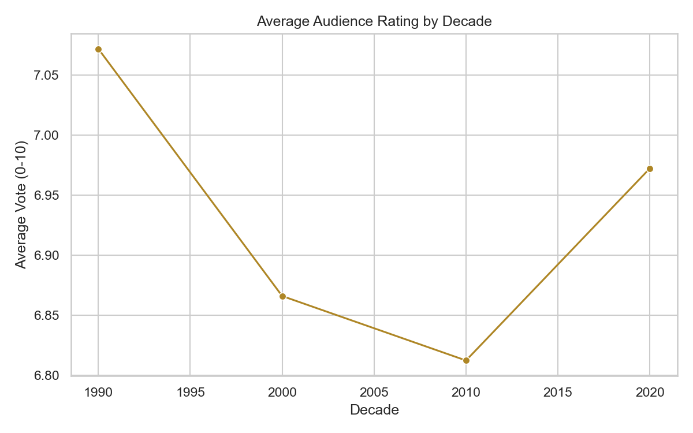
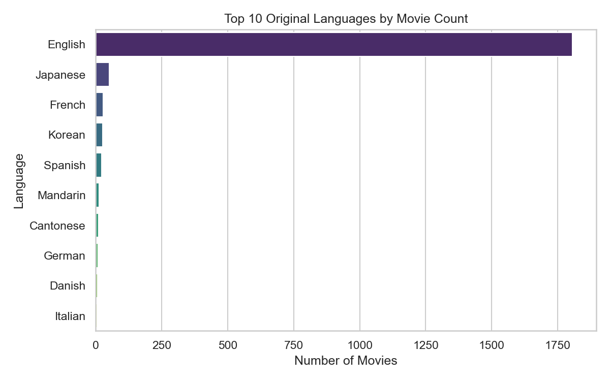
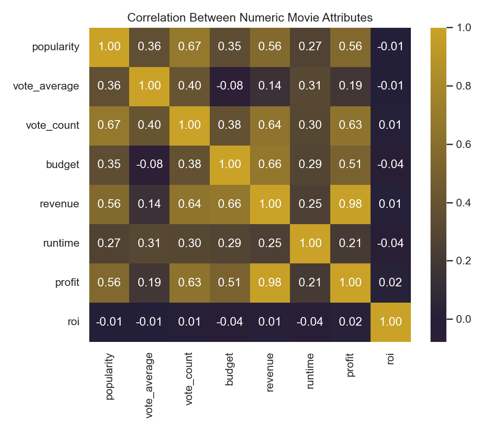
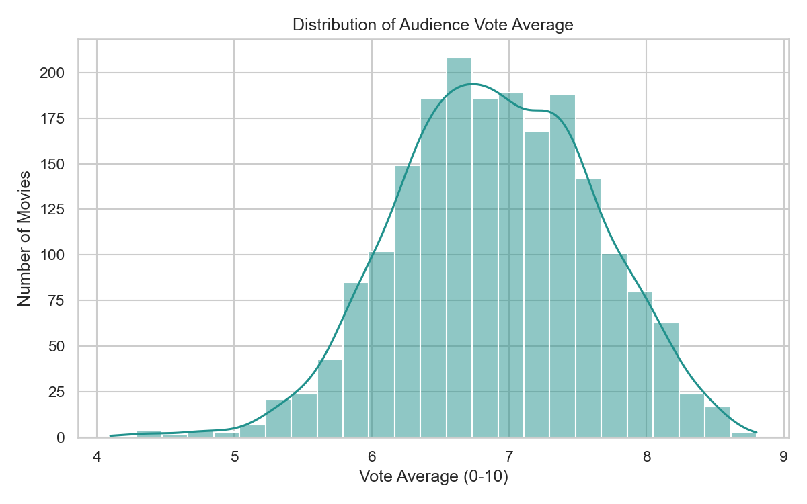
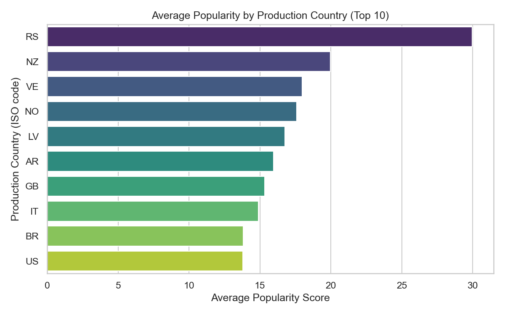
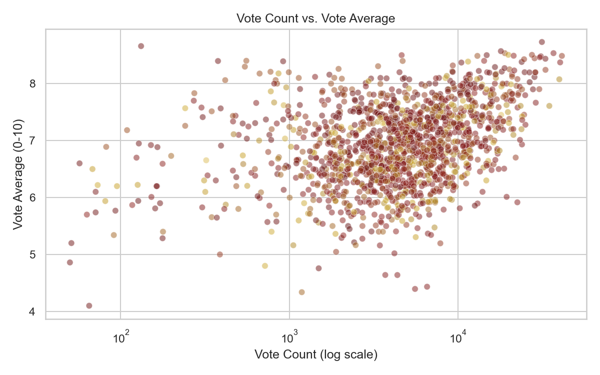
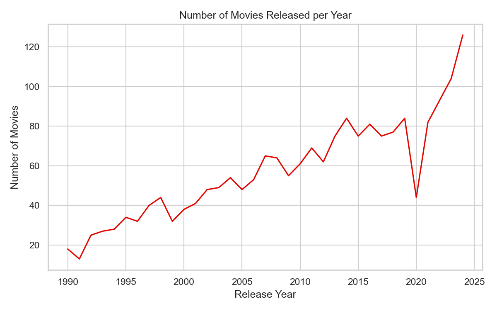
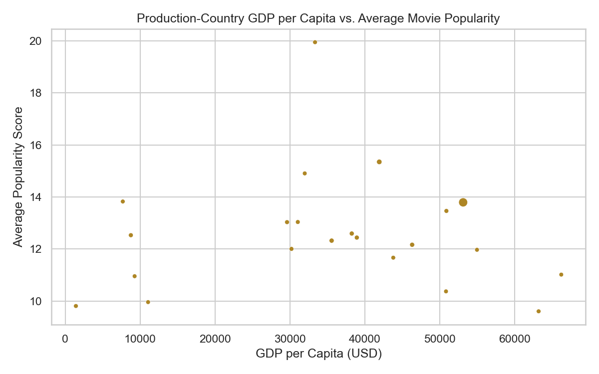